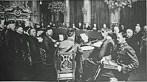
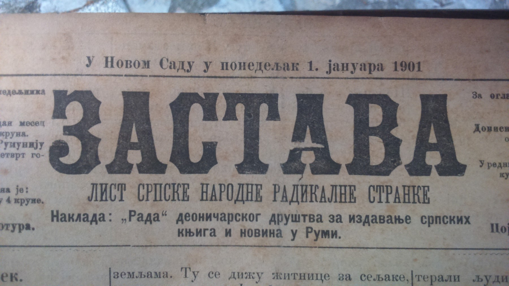
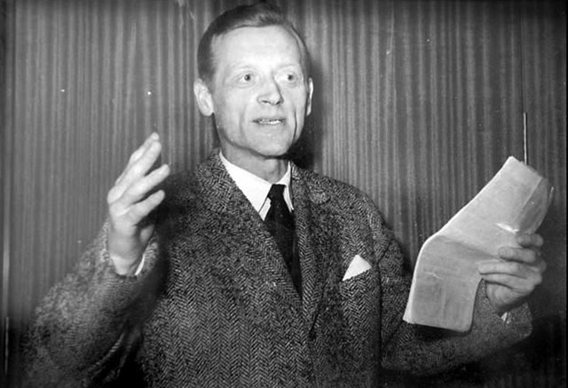

Почетак стварања Народне радикалне странке везан је круг српске омладине окупљене око Светозара Марковића и Николе Пашића. Прваци ове групе 1871. године су створили политички програм у коме, између осталог, захтевали промену устава, слободу штампе, удруживања, јавног окупљања и политичке акције, независност судства, реформу школства, и локалну самоуправу.
Zbog odbrane lokalnih izbora u Kragujevcu organizuju demonstracije poznate pod nazivom "Crveno barjače". Narodna radikalna stranka, u prvom Programu postavlja cilj: “Unutra narodno blagostanje i sloboda, spolja oslobođenje i ujedinjenje ostalih delova Srpstva”.
Тај је програм касније постао делом програма нове странке. Прва Главна скупштина Народне радикалне странке била је јула 1882. године у Крагујевцу. На њој је усвојен радикалски Програм, а за председника Главног одбора изабран је Никола Пашић. Један од идеолога и организатора радикала био је новинар Пера Тодоровић.
Радикали су имали утицајну штампу. Слободан Јовановић у "Другој владаи Краља Милана Обреновића" пише да је та штампа била агресивна у критици тадашњег режима.
Народна радикална странка након 1881. нагло повећава број својих чланова, а на изборима остварује убедљиве победе, упркос репресији тадашње власти.
Септембра 1883. године избија Тимочка буна, узрокована наређењем краља Милана Обреновића да војска сељацима одузме приватно оружје. Краљ Милан оптужује радикале да су чланком “Разоружање народне војске” у листу “Самоуправа” подстакли сељаке да одбију предају оружја.

Буна је у крви угушена након десет дана. На Краљевици, близу Зајечара, стрељан је двадесет и један побуњеник. Цео Главни одбор Народне радикалне странке је ухапшен, осим Николе Пашића и неколицине других радикала, који су пребегли у Бугарску. Неколико првака Народне радикалне странке, заједно са одсутним Пашићем осуђени су на смрт. После извесног времена Краљ Милан амнестира неке од осуђених радикала, који великих унутрашњих спорова постижу договор са краљем и долазе на власт 1887.
Упркос притисцима и расулу насталом након Тимочке буне, Народна радикална странка успева да консолидује своје редове и да оствари доношење Устава из 1888. године. “Радикалски Устав” у највећем делу испунио је захтеве које је у Програму поставила Народна радикална странка. Њиме је, иако уз извесна ограничења, уведена парламентарна владавина, загарантована су права и слободе грађана и уведена локална самоуправа.
Nakon Majskog prevrata 1903. godine Narodna skupština vraća na snagu Ustav iz 1888. godine sa izmenama - ukida se Senat i uvodi jednodomno narodno predstavništvo. Srbija je postala parlamentarna i ustavna monarhija. Nikola Pašić formira vladu i tada počinju radikalne reforme države.

У Краљевини Срба, Хрвата и Словенаца Народна радикална странка наставља владавину у коалицијама са другим странкама. Након Пашићеве смрти 1926. године, за председника Главног одбора Народне радикалне странке изабран је Аца Станојевић.
Након увођења шестојануарске дикататуре 1929, НРС је забрањена. Део радикала учествује у владама, док Главни одбор окупљен око Аце Станојевића захтева укидање дикатуре и враћање парламентаризма и локалне самоуправе.
Aвгуста 1935. године Народна радикална странка, Југословенска муслиманска организација и Словенска људска странка уједињују се у Југословенску радикалну заједницу, са Миланом Стојадиновићем на челу. Главни одбор НРС убрзо се разилази са Стојадиновићем, тадашњим председником владе, и прелази у опозицију.
вгуста 1935. године Народна радикална странка, Југословенска муслиманска организација и Словенска људска странка< уједињују се у Југословенску радикалну заједницу, са Миланом Стојадиновићем на челу. Главни одбор НРС убрзо се разилази са Стојадиновићем, тадашњим председником владе, и прелази у опозицију.

Странка је поново пријављена 25. новембра 1939, и даље на челу са Станојевићем
Током другог светског рата радикали су били подељени у две фракције -уз покрет Драже Михајловића, и уз владу Милана Недића. Након Другог светског рата дошло је до ликвидације свих странака, осим комунистичке, па тиме и до укидања Радикалне странке.
У Паризу је 1952. године основан Радни одбор НРС у егзилу, који је проширен одборима за САД, Аргентину, Француску и Балканске земље. Основана су и повереништва за В. Британију, Немачку, Шпанију, Северну Африку и акциони одбор за Аустралију. У Паризу С. Тривунац покреће лист "Радикал". Радикали у емиграцији деловали су и кроз разне политичке и културне организације, али нису имали већи утицај у Србији.
Народна радикална странка наставља рад у земљи након увођења вишепартијског система 1990. За председника НРС 1990. изабран је адвокат Вељко Губерина, али странка не успева да се стабилизује. Једна фракција Народне радикалне странке, предвођена Томиславом Николићем, ушла је у Српску радикалну странку Војислава Шешеља.